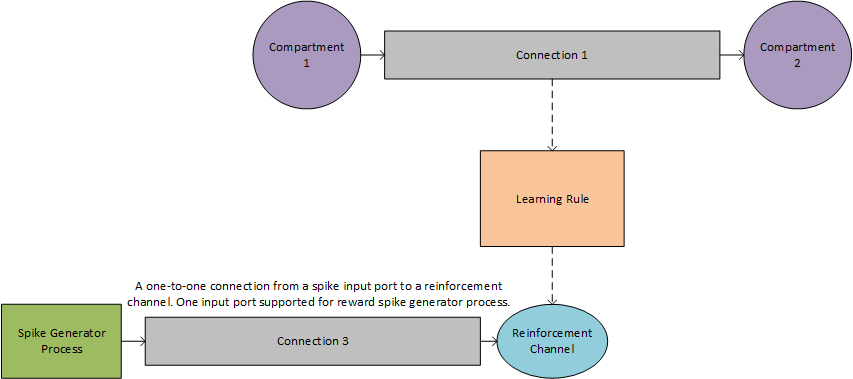

Learning with Reinforcement¶
The Nx SDK supports injecting reinforcement to a learning rule in two different ways: injecting reinforcement directly from a spike generator or injecting reinforcement from another compartment.
Warning
If two reinforcement channels have the exact same parameters, they will be combined into a single reinforcement channel.
Injecting Reinforcement From A Spike Generator

# Prototypes
pbasic = nx.CompartmentPrototype(vThMant=150,
compartmentCurrentDecay=3276,
compartmentVoltageDecay=3276,
logicalCoreId=0)
plrn = nx.CompartmentPrototype(vThMant=150,
compartmentCurrentDecay=3276,
compartmentVoltageDecay=3276,
enableSpikeBackprop=1,
enableSpikeBackpropFromSelf=1,
logicalCoreId=0)
lr = net.createLearningRule(dw='0*u0*x1+u0*r1+0*u0*y1',
x1Impulse=40,
x1TimeConstant=4,
y1Impulse=40,
y1TimeConstant=4,
r1Impulse=40,
r1TimeConstant=4,
tEpoch=2)
connProto2 = nx.ConnectionPrototype(weight=50, delay=0,
enableLearning=1,
learningRule=lr)
# Created Compartments
c1 = net.createCompartment(pbasic)
c2 = net.createCompartment(plrn)
# Create Connections
conn1 = net.createConnection(c1, c2, connProto2)
# Create Spike Generators and Connect to Reinforcement Channel
numPorts = 1
portNum = 0
spikeTime = 20
spikeGenReward = net.createSpikeGenProcess(numPorts)
spikeGenReward.addSpikes([portNum], [[spikeTime]])
conn3 = spikeGenReward.connect(lr.reinforcementChannel)
Injecting Reinforcement From Another Compartment

# Prototypes
pbasic = nx.CompartmentPrototype(vThMant=150,
compartmentCurrentDecay=3276,
compartmentVoltageDecay=3276,
logicalCoreId=0)
plrn = nx.CompartmentPrototype(vThMant=150,
compartmentCurrentDecay=3276,
compartmentVoltageDecay=3276,
enableSpikeBackprop=1,
enableSpikeBackpropFromSelf=1,
logicalCoreId=0)
lr = net.createLearningRule(dw='0*u0*x1+u0*r1+0*u0*y1',
x1Impulse=40,
x1TimeConstant=4,
y1Impulse=40,
y1TimeConstant=4,
r1Impulse=40,
r1TimeConstant=4,
tEpoch=2)
connProto2 = nx.ConnectionPrototype(weight=50, delay=0,
enableLearning=1,
learningRule=lr)
# Create Compartments
c1 = net.createCompartment(pbasic)
c2 = net.createCompartment(plrn)
c5 = net.createCompartment(pbasic)
# Create Connections
conn1 = net.createConnection(c1, c2, connProto2)
conn3 = net.createConnection(c5,lr.reinforcementChannel)